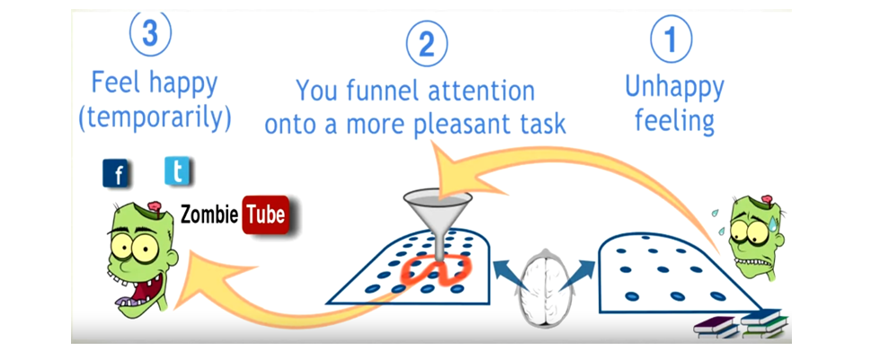
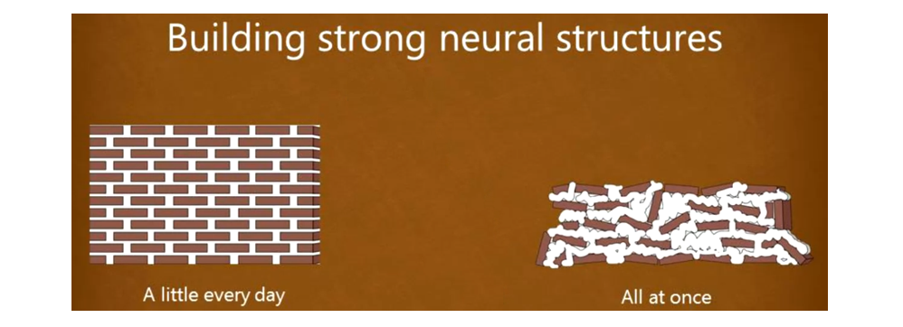
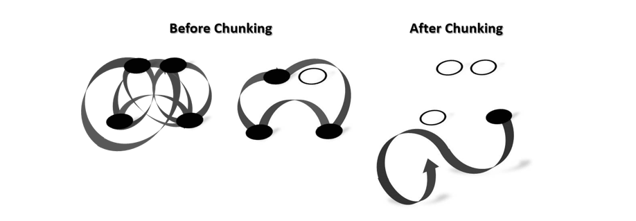
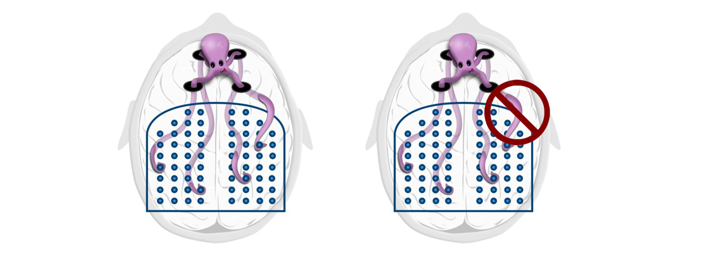
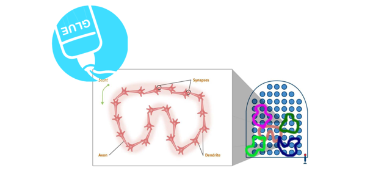

思考的方式：专注与分散（Focused versus Diffuse Thinking）
首先设想一下，如果你在想一个问题，但始终得不到答案，你会怎么办？对没有脑子的僵尸（zombie）来说，它可以不断地撞墙，但我们比它们聪明那么多，应该怎么做才能学得更好而且不焦虑呢？这里我们就要引入思考的两种方式：专注模式（Focused Mode） 和 分散模式（Diffused Mode）。
专注地思考似乎很好理解，但分散地思考就感觉不太好理解了。我们可以将大脑类比为一个弹珠机，弹珠机的每个点代表着大脑的某个区域。
对于专注模式而言，你已经熟悉了某个/种问题如何解决，这种解决方式就可以用弹珠机的特定几个点的碰撞模式来表示，当你的想法（Thought）在这几个点碰撞之后，boom！你的问题就解决了！也就是说，对于一个你熟悉的问题，你知道你的想法在的大脑中应该走怎样的路径/模式（或者说你的思考的起始点应该在哪），你的问题就能解决，于是你会选择专注到这个路径/模式上，这就是思考的专注模式。比如你正在解你很轻松就能解出来的薛定谔方程（嗯？），又或者你在进行着你熟悉的文学批评。专注模式更利于我们解决问题。
而对于分散模式而言，你遇到了某个你从没遇到过的问题，所以首先你并不知道怎么解决，这个时候你的想法需要在你大脑的弹珠机里不断乱撞，最终才能找到一个出路。也就是说，对于一个你陌生的问题，你并不知道问题的解决方式是什么，你只能在大脑中不断探索，无法专注到某个路径/模式上（或者说你并不知道你的思考的起始点应该在哪），这就是思考的分散模式。分散模式更利于我们进行创造性思考。
所以，这样的两种思考方式对我们来说有什么启示意义？上面说了，分散模式更利于创造性思考，而专注模式利于问题的解决。也就是说，我们要学会在两种思考模式之间进行转换，特别是对于对创新性有高要求的科研工作者而言。
拖延、记忆与睡眠（Procrastination, Memory and Sleep）
每个人或多或少都有点拖延症（应该吧），但是拖延是怎么发生的呢？说来其实也简单，首先我们遇到了某件事让我们不开心/焦虑，然后我们的大脑会驱使我们去做开心的事情以获得快乐。

那么怎么克服拖延症呢？著名的 番茄工作法（Pomodoro） 其实就是一个很有效的方式！具体操作如下：
- 定时25分钟，大部分人都可以保持25分钟的专注时间；
- 关掉所有会对你有打扰的源，以帮助你更加专注；
- 专注、专注再专注；
- 25分钟结束之后，一定要给自己一点奖赏！（促进多巴胺分泌）可以是一杯咖啡、一次闲聊、几分钟的上网甚至只是一次拉伸（休息一段时间）。
另外一个克服拖延症的方法是给自己积极的心理暗示（比如“不能再浪费时间了！”），且为了防止拖延，应该避免把注意力集中在结果上，而应该是在执行过程中（比如告诉自己，不是“不要写完这个作业”，而是“我要花20分钟写作业上”，因为结果往往是造成你不开心/焦虑的来源）。
而关于记忆，我们常说的就是熟能生巧（Practice makes permanent）。所以要记住一个概念，练习很重要（这也是让工作记忆（working memory）转变为长期记忆（long term memory）的关键，此外练习也应该优先考虑难题）。但是，填鸭式的学习并不提倡，有效的学习应该是**间隔重复（Spaced Repetition）**的，这也是为什么番茄工作法要每25分钟休息一次的原因。做个比喻，在专注状态下，我们的大脑在用水泥讲我们大脑中的砖块（神经元）进行连接，而休息时间，我们的大脑更像是在会水泥墙砖进行修整（或者说让水泥干燥以更好支撑砖块），我们一次不能用太多水泥，而且如果没有时间进行修整的话，我们的大脑最终记忆/学习的结果可能会如下右图所示。

说到记忆，另一个不得不提的事实就是，图像对记忆非常重要（我们对图像的记忆能力远大于文字）！也就是说，将要记忆的信息图像化，是一个重要的记忆技巧。另外要将要记忆的内容进行有意义地分组，也很重要（比如要记住五线谱上四个间对应的几个音（分别是F、A、C、E），那我们就可以用face这个单词来记忆）。以上两点也是记忆宫殿背后的机理，其很适合被用于记忆一个列表的内容，而且有趣的是，用了记忆宫殿，记忆的过程又会变成一种创造力训练。
对于记忆做个总结，其实要将短期记忆转变为长期记忆，有两个条件：首先，它应该是令人印象深刻的（足够夸张，比如一只在飞的牛）；另一个则是，内容需要我们的重复和回顾（重复间隔可以逐渐变长，anki在这方面有内置算法帮助实现）。实践上来说，手写（手写也能帮助记忆）索引卡（一面写着索引，另一面写着内容，同时也可以画出一些令人难忘的图像），且必要时大声朗读（建立听觉联系），也是一个有效的重复方式。
也许睡眠看起来是一件浪费时间的事情，但其实，在我们睡觉的时候，大脑中一天积累的有毒物质会被清理，所以睡眠不足也会让人思维能力下降，甚至产生头痛、抑郁症等后果。实际上，睡眠在记忆和学习中也是很重要的一部分：在睡眠的时候，大脑会将学习和思考过的想法概念进行整理，清除一些不太重要的内容，并增强重要的内容（在大脑中重复（Rehearsal）学习到的内容以增强记忆）。所以一个好的方式是：在睡前学习自己想学的内容，并不断告诉自己想梦到自己学的内容（相信潜意识的能力！），这样在睡眠中加强学到内容的记忆的概率会变大。
组块（Chunkings）
首先什么是 组块（Chunking） ？设想你感知这个世界的一小部分（比如学习特定内容）在你脑子里就是一小块拼图，那么组块就是把这些碎片化的小拼图给拼到一起，成为一个更大的相互嵌套、有序连接的大拼图，而大拼图之间又可以组成更大的拼图。下次当你需要回忆起相关的内容，你就可以想起对应的整个拼图。这背后的神经科学其实就是：组块就是大脑中的神经元网络，他们共同发放，接着就连在了一起（Firing together, wiring together）。再联系到人的工作记忆容量只有4左右，我们将学到的东西组块之后，当我们对其调用时就只会占用一个工作记忆的槽位，这也变相增加了我们的记忆容量。

那么怎么形成我们大脑中的组块呢？可以参照以下步骤：
- 首先，对你想要组块化的信息全神贯注（不要被外部信息干扰，如回复信息）。我们可以把大脑连接组块的机制想象成一只有四个触手的章鱼（人类的工作记忆容量大致只有4！），所以当其中的某个触手被其他事情占用时，你大脑里的章鱼就无法触及到新知识的各个方面；
 - 其次，你对建立组块的对象要有基本的理解。理解是一种强力胶，会帮助你找到不同碎片的联系，以建立更大的组块，且知道如何使用它们（所以记得做题、亲自操作来帮助你加强理解！）；
 - 第三，要了解组块的背景知识。这样你就不仅知道如何使用组块，还明白应该在什么时候用它（Top-down的big piture）。比如在阅读时，可以先过一遍文章/书籍的标题/节标题，及其中的图，会帮助你大致了解其内容。换句话说，其实就是事先了解你要建立连接的组块之间可能的联系。
回顾（Recall）
2011年有一篇发表在 Science 上的论文表明，在学习某个材料之后，拿走材料，尽力回想自己学到的东西，实在想不起来再重新学习材料，学习效果会远远好于繁杂的反复阅读、或者绘制据说很有效果的思维导图。
Karpicke, J. D., & Blunt, J. R. (2011). Retrieval practice produces more learning than elaborative studying with concept mapping. Science, 331(6018), 772-775. doi: 10.1126/science.1199327
在回顾的时候，我们加深了对材料的理解，这也有助于我们形成知识组块。但同时需要强调的是，思维导图并不是一种无效的学习方法，而是应该在对知识组块有个清晰的理解之后（打好地基），才能起到更好的效果。
此外，尽管回顾不起来一些内容需要我们重新阅读材料，但也别忘了前面提到的间隔重复练习才更有效果！所以，在两次阅读之间，要有足够的间隔时间。
再联系到阅读文献，每读一部分内容，用自己的话在旁边总结这部分讲了什么，效果会远远好过单纯的（自欺欺人的）对整篇文章进行高亮、划线。
总结一下：回顾 是很重要的学习的过程！千万不要让自己掉进以为书里的或者谷歌上的内容就印在自己脑海里的 学习的错觉（Illusions of Competence）！
此外，在不同于学习发生的环境中进行回顾，也可以帮助我们学得更加牢固。（避免了环境对潜意识的提示作用。）
过度识记与交叉学习（Overlearning and Interleaving）
过度识记 有其自身的意义，它能够帮助我们使得 行为自动化（如演奏钢琴），自动性（Automaticity）在紧张的时候确实很有用。但要警惕在单一学习阶段的重复性过度识记，这可能是对宝贵的学习时间的浪费，容易产生学习的错觉（觉得一切都很简单），也会更容易让你 陷入思维定势（Einstellung）。
而交叉学习是减弱思维定势的一种好的方式，也就是说，我们可以尝试在学习中，在需要不同技术和策略的问题以及情形中来回切换。但要注意的是，交叉学习也需要发生在对学习的内容有基本的掌握之后。交叉学习会让大脑更具有灵活性和创造性。当你在一个学科的内容内交叉学习，你会开始在这个学科内发展创造力；而当你在多个学科的内容之间交叉学习，你会更容易找到这些学科之间的联系，这也能进一步提高你的创造力。
要做出真正有创造性的工作，一定要避开思维定势，正如Thomas S. Kuhn在 The Structure of Scientific Revolutions 里所说，科学中的大部分范式转变，都是由年轻人或者之前学习其他学科的人所提出。加油吧！争取做这个年轻人！
习惯（Habbits）
我们每个人大脑中都仿佛有一个僵尸（zombie），不加思考地做着某些事情，它驱动着我们的习惯。那么怎么驾驭这个“僵尸”让它为我们服务而不是耽误我们干事呢？养成习惯有4个要素，我们分别对他们进行阐述：
- 信号（the cue）：信号可以是地点（location）、时间（time）、你的感觉（how you feel，对别人或者刚刚发生的事）和你的反应（reactions，对别人或者刚刚发生的事）。那么破坏掉触发坏习惯的信号，就是一个好的改掉坏习惯的方式（比如关掉手机或者断掉互联网），而在干正事之前做一点小事作为自己的开始信号，以后执行这个动作之后就会更容易就进入状态（比如喝一杯咖啡）；
- 惯式（the routine)：做好计划（plan），比如在看书的时候都呆在某个椅子上，将坐在这个椅子与看书强绑定在一起，这样的惯式会也会帮助你养成好习惯；
- 奖赏（the reward）：记住，习惯的力量之所以强大，最重要的就是因为习惯制造了神经系统的欲望。所以首先要调查一下自己喜欢的是什么？比如说要改掉玩游戏的习惯，那么你要知道什么样的奖励对你来说会比游戏更诱人，并将它附加在你想养成的行为之后。只有当大脑开始期待那个奖励，旧习惯才能得到重置；
- 信念（the belief）：首先你要相信你自己能做到，否则当事情变得困难的时候（很经常的情况），你就会觉得自己做不到，想着要回到之前的舒适区（旧习惯）之中。可以与志同道合的朋友组成小组，相互鼓励，帮助自己坚持信念。
待办事项（To-do list）
对大多数人来说，学习需要在不同的每天繁杂的任务中达到平衡。一个好的方式就是在每周写下 本周关键任务列表（Weekly list of key tasks）。每一天睡前，又写下接下来一天的每日任务（因为这样可以召集你大脑中的僵尸（潜意识）去帮助你完成任务）。如果你不把任务写下来，那么它们就会占用你宝贵的工作记忆的槽位，你大可以将其空出来干更有用的事情。
同时我们在安排任务的时候，应该做好生活和学习的交叉（比如在学习之间安排一次体育锻炼），这样也可以避免久坐成疾，且让每件事更有趣。每天也要定下一个时间点（比如下午5点），在这时间点之后就是你的休息时间（休息之后才能有足够的精力进行第二天的工作）。
此外，也要在计划本中对完成的和未完成的任务做好批注，这样你才能更了解自己的时间应该怎么安排，以避免任务完成不了带来的挫败感。
其他（Others）
quote from Dr. Terrence Sejnowski, 充足宽广的空间/锻炼 可能会让大脑产生新的神经元（海马体上），这也能帮助我们学习记忆！所以，没事就多跑步吧！而且，多 跟有创造力的人交流，也可以让你更有创造力！所以，也多跟人交流吧！
quote from Dr. Norman Fortenberry in MIT，学习中的团队合作很重要（但注意别让学习小组变成社交小组）！讨论会发现你们彼此理解的谬误。另外要重视休息的重要性。
比喻与类比对于我们理解概念也很重要，它们能帮助我们从形象的角度上理解 抽象的东西（比如将电流比作水流，这样的比喻可以让我们记住很久，因为它可以将要学习的东西与我们脑海中已经存在的神经结构建立联系）。另一方面，比喻和类比也可以帮我们保有 创造力，能将我们从思维定势中解救出来。
现代神经科学之父卡哈尔（Cajal），曾经固执而叛逆，小时候曾进过监狱，最后也获得了诺贝尔奖。他觉得自己成功的关键之一正是因为自己不太聪明，敢于承认错误并修正，此外还有坚韧不拔的毅力和自信。
应对考试，相比于从简单的题目开始，一个更好的技巧是：从难题开始，但2分钟觉得没有思路马上跳过（基本上都是这样），回到简单的题目，这会让难题在你脑海中留下印象，这会开始让分散模式开始作用于难题（别忘了创造力怎么来的），通常也会让你更快进入状态。如果你觉得太紧张了，一个有效的方式就是把注意力集中在你的呼吸上（冥想），然后缓慢腹式深呼吸一段时间。在答案检查上，选用一个与做题相反的顺序，可以给大脑新鲜感，这也会让你更容易揪出错误。